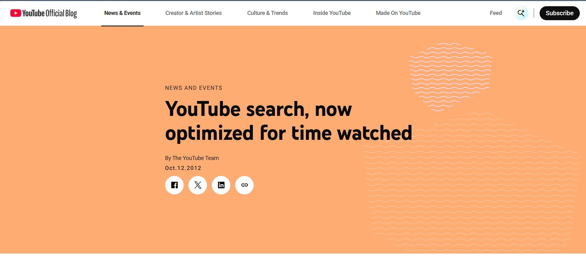

YouTube Creator Blog announcement from October 2012 introducing watch-time optimization
YouTube made this announcement on October 12, 2012, revealing that they had shifted from the view based to watch time based recommendation algorithm as a solution to prevent the high amounts of clickbait caused by their previous algorithm. Stating that their previous system had rewarded clicks generated by misleading thumbnails even when viewers left immediately. YouTube's announcement was directed towards creators and not general users which showed how the platform viewed the algorithmic change more so as a business decision, failing to mention how watch time optimization could lead to user harms such as extreme watching periods and compulsive viewing.
This method of solving one algorithmic problem by switching to another engagement metric repeated across many social media platforms, as a result revealing that the issue isn't specific algorithm design but the business model encapsulating its use cases. Researchers have found that such curation systems can produce unintended polarization and filter bubbles creating echo chambers (Berman and Katona, 2020). Yet, platforms are still continuing to optimize for engagement above all else.
In conclusion, YouTube had inadvertently created the clickbait problem which demonstrates that algorithms powerfully shape human behavior in ways their designers may not fully anticipate. Lastly, this 2012 shift influenced the foundational principle that would be perfected by TikTok as the "For You Page" years later, which makes it a critical but overlooked moment in the development of engagement maximizing algorithms.